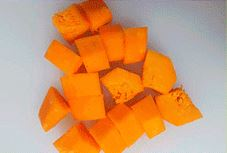
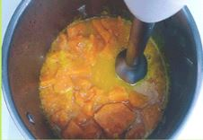
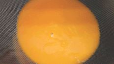

Esta crema fría de calabaza y naranja es el plato refrescante que apetece tomar en verano. Con esta crema fría nos hidratamos y le aportamos a nuestro cuerpo las vitaminas y los nutrientes que el cuerpo necesita para estar fresco y saludable.
Y todo ese aporte nutricional lo conseguimos a través de una receta sencilla y sabrosa, hecha con productos de temporada de verano que podemos encontrar en cualquier frutería.
La ventaja de las cremas y las sopas frías es que son muy fáciles de preparar: mezclas los ingredientes, los trituras y a la nevera para que estén fresquitas.
¿Te gustan las cremas frías? Esta es tu receta.
Ingredientes de la crema fría de calabaza y naranja para 4 personas:
800 gr calabaza
300 ml zumo de naranja o 4 naranja
500 ml agua
Aceite
Sal
1 rodaja fina de Jengibre
Elaboración:
Paso 1. Se trocean los 800 gramos de calabaza en cuadrados y se sofria en una cazuela hasta que quede un poco dorado, entonces le añadimos la rodaja de jengibre

Paso 2. Se añaden los 300 ml de zumo de naranja, y los 500 ml de agua en una cazuela, lo dejamos cocer a fuego medio durante 30 minutos, hasta que la calabaza de ablande (si ves que se queda seco, añade más agua). Una vez cocido lo trituraremos todo.

Paso 3. Pasaremos la crema por un colador para quitarle todos los grumos que pueden quedar despues de triturarlo.

Paso 4. Dejamos enfriar en la nevera, y lo servimos bien frio